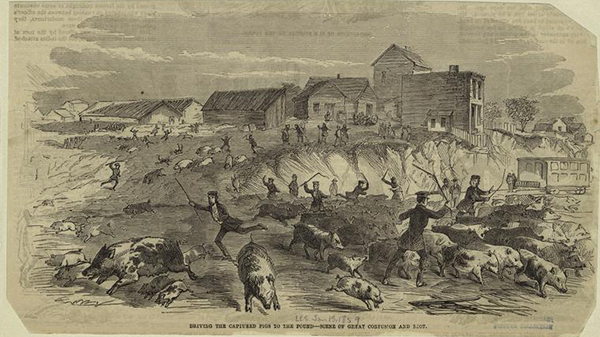

METROPOLIS OF SCIENCE
WHEN HOGS RULED
In an effort to make their city more sanitary, New York police remove piggeries. The pigs were chased out, the pens burned, and the offal covered with lime. (Bettmann/Corbis / AP Images)
Urban menace or vehicle for garbage removal? Thousands of feral pigs once roamed and ruled the city's streets
By Kristen French
Two centuries ago, pigs owned the streets of Manhattan. In an editorial that ran in the New-York Evening Post on August 25, 1818, entitled simply, “Hogs,” an outraged resident decried the multitude of porkers rampaging through the city and the failure of the city aldermen (“the corporation”) to enforce laws that made keeping them in the streets illegal.
“Since it has been found impossible either to reason or to shame the corporation into its duty in relation to this intolerable nuisance, is there not another consideration which will induce the hog proprietors to keep their stock at home—or at least out of the streets?” the New Yorker barked. “It is not uncommon to find in our shortest streets, twenty or thirty hogs.” Not only were these street hogs—which fed upon the offal, slime and garbage piled high on every corner — likely to carry dangerous diseases, they were also apt to end up on the butcher’s table and, thus, on a refined citizen’s dinner plate. Not a savory thought, the writer complained.
Hogs had been a source of controversy in New York since at least the 1600s, but attitudes began to harden after the American Revolution as the city’s population swelled with migration from the countryside and overseas. When the rural poor flocked to the city, they brought their hogs with them. Suddenly, the squealing swine became much more difficult to ignore. According to one estimate, around 20,000 hogs roamed Manhattan’s residential areas by 1820, equivalent to one hog for every five people living in the city. The story of their rise and fall as a fixture in New York City streets reveals much about class politics, sanitation and perceptions of disease in 19th century America. The pigs were able to thrive because the city had no system for cleaning up garbage, and they were mistakenly associated with the spread of disease; skirmishes were divided along class lines.
On August 4, 1821, another opinion piece ran in the New-York Evening Post, “Hogs Running At Large in the Streets,” detailing the efforts of marshals and constables to clear hogs from the city's thoroughfares, despite attacks against them by hog owners wielding broom sticks and scalding water. Earlier that year, the aldermen had passed an ordinance requiring that any hogs found running below Grand Street be taken to an almshouse, presumably to provide the poorest with some charity bacon. The new rule was also meant to prevent recidivism. Previous regulations levied fines; but after paying up, hog owners often simply let their pigs loose again.
Ridding New York City streets of hogs was a protracted battle that lasted several decades more. Police were relatively lackadaisical about enforcement of laws and riots broke out whenever authorities tried to confiscate the animals. In 1821, 1826, 1830 and 1832, hundreds of working-class Irish and African American mothers, who relied on their pigs to feed their families cheaply, mobilized to liberate the animals after they were nabbed by hog catchers. Those in favor of allowing the pigs to continue their scavenging argued that to deprive the owners of their animals was to visit misery on the vulnerable poor. The pigs were so highly valued in part because almost no investment in housing or feeding them was required, and buying meat from the markets was expensive. But there were legal obstacles to expelling the pigs from the city as well. As late as 1830, a jury found in favor of hog-owner Mr. White of the Ninth Ward, who claimed that because the pigs were his private property, their confiscation was a violation of the constitution.
Those who were anti-hog mostly belonged to a growing urban elite who preferred to put as much distance between city and rural life as possible. They did not rely on the pigs for sustenance or wages, and they wanted to raise living standards as they increasingly moved into poorer northern neighborhoods—Gotham’s earliest gentrifiers.

Print Depicting "Pork Lively"—A Sketch from Nature at the Corner of Broadway and Fourth Street (Source: Bettmann/Corbis / AP Images)
They were embarrassed, too, by the poor opinions of their city held by foreign visitors, who were appalled by the omnipresent pigs. In his American Notes, from 1842, Charles Dickens wrote about his encounters with the pigs in New York City with sly sarcasm: “He is in every respect a republican pig, going wherever he pleases and mingling with the best society, on an equal, if not superior footing, for everyone makes way when he appears, and the haughtiest give him the wall, if he prefer it…they are the city scavengers, the pigs. Ugly brutes they are; having, for the most part, scanty, brown backs, like the lids of old horse-hair trunks: spotted with unwholesome black blotches…They are never attended upon, or fed, or driven or caught.”
The pigs also posed a real menace. They destroyed pavements with their powerful snouts, making sidewalks dangerous for pedestrians and roads difficult for wheeled vehicles; they spooked or ran into horses, resulting in overturned carriages; they attacked and occasionally killed children; and in at least one case, they caused the death of a grown man—not in New York, but in Philadelphia. In June 1820, Dr. Rene La Rocha was knocked over by a hog as he strolled down the sidewalk. He hit his head, fractured his skull and promptly died. Still, none of this was enough to motivate New York City’s government to find a workable solution to the problem.
Cholera changed everything. The first epidemic struck New York in 1832, killing 3,513 people. In December 1848, New York City was broadsided again by the disease, and this time 5,071 residents died. Popular medical opinion held that diseases were caused by the breathing of “miasmas” (filthy odors) and the foul smelling hogs, constantly coated in muck and slime and wallowing in the filth, were thought to contribute. It didn’t help that many of the epidemics’ early and impoverished victims died after eating undercooked pork. Today it is clear that contaminated city wells and canals fueled the cholera epidemics, instead of swinish miasmas. Cholera, an acute diarrheal bacterial disease, spreads from one human to another when the excrement of an infected person contaminates water supplies and foodstuffs. Pigs can get hog cholera, also known as classic swine fever, but humans can’t catch this strain of the disease.
The reality is that in the absence of better sanitation measures, the hogs mostly made the city cleaner rather than dirtier, especially in the poorer parts where garbage collection was non-existent. In the early 19th century, New York City was generally recognized as “the filthiest urban center in the United States,” say Edwin G. Burrows and Mike Wallace, writing in Gotham. The authors blame overcrowding due to housing shortages during an immigration boom and the city government’s “hands-off approach” to sanitation. “Great heaps of mud, garbage, and animal excrement piled up in the streets, forming a stinking mash labeled ‘Corporation Pudding’ by a disgusted citizenry,” Burrows and Wallace write. “To this base were added the noxious by-products of slaughterhouses, tanneries, dyers, distilleries, glue works, bone boilers, and stables, which had once been banished to the periphery but had now been overtaken by rapid expansion and were back in town.” Scavenging pigs consumed a great deal of this vile stew: 100 pigs can eat nearly a ton of garbage a day, according to 1916 estimates from the United States Food and Drug Administration. And while it was one of the latest to continue the practice, New York City was certainly not the only metropolis to use pigs to clean up garbage. Pigs ran through London streets at least until the late 18th century. Many other U.S. cities used pigs to clean the streets, too.
But pigs were so synonymous with filth that when a third major cholera epidemic threatened New York City in 1849, local government decided it must oust the swine. That summer police braved violent resistance to run 5,000 to 6,000 pigs out of cellars and attics and another 14,000 to 15,000 from the streets into the northern wards of the city. And they kept at it the following year, and the year after that. A decade later, nearly 100 men gathered by the Superintendent of Sanitary Inspection shuttered a camp of penned pigs called Hog Town, residing in what is now Central Park. The so-called Piggery Wars had begun. After about a month of work, some 9,000 hogs were driven to the public pound, 3,000 pens demolished, 100 boilers removed and 250 barrels of lime used to purify the area. Many of the pigs were transported to Brooklyn or Westchester and a new ordinance was drafted. Fines and even imprisonment awaited anyone keeping pigs in Manhattan south of 86 Street. It marked the end of a very long and lively reign.
Connecting to Device
Device is Ready